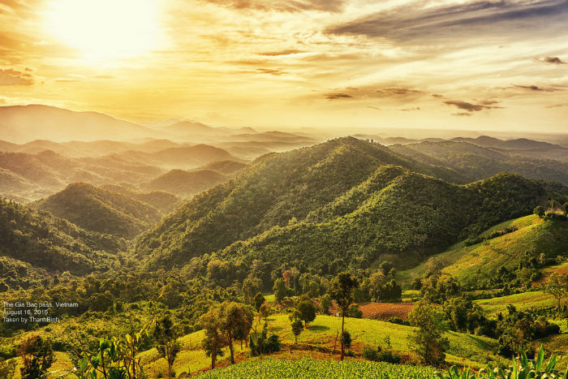

Giới thiệu về cao nguyên Di Linh: Một thoáng thiên nhiên khoác lên mình vẻ đẹp hoang sơ, quyến rũ
- Vị trí địa lý Di Linh: Di Linh là một huyện thuộc tỉnh Lâm Đồng, nằm trên cao nguyên Di Linh, ở độ cao 1.000 m so với mặt nước biển. Di Linh là vùng đất Bazan màu mỡ, diện tích đất tự nhiên 161.315,5 ha; trong đó, có 67.923,6 ha đất sản xuất nông nghiệp, chiếm 42,11% tổng diện tích tự nhiên; có 83.254,6 ha đất lâm nghiệp, chiếm 51,61% tổng diện tích tự nhiên
- Khí hậu:
Khí hậu vùng đất Di Linh trung bình không nóng lắm, không lạnh lắm, nhiệt độ trung bình khoảng 20 °C, và thường thay đổi đúng mùa trong năm.
